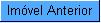
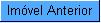
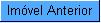

,
existente no final da página.
,
existente no final da página.
- Este botão não ficará disponível quando estivermos no último imóvel da lista.
 .
.
- Este botão não ficará disponível quando estivermos no primeiro imóvel da lista.
Análise da Medição e Consumo do Mês
Esta tela faz parte do processo "Analisar Exceções de Leitura e Consumo", e permite que você visualize todos os dados relacionados com a medição e consumo de um imóvel num determinado mês, e, se for o caso, "Substituir Consumos Anteriores", ou "Alterar Dados do Faturamento".,
existente no final da página.
.
Campos Apresentados
Observação - 1: Acima, só estão relacionados os grupos de dados que são apresentados na tela. Para ver todos os campos apresentados na tela, entre na aplicação propriamente dita.
Funcionalidade dos botões|
Botão |
Descrição |
|---|---|
 |
Utilize este botão para voltar para a tela anterior. |
 |
Ativar a opção do sistema que permitirá a substituição de consumos de meses anteriores do imóvel. |
 |
Ativar a opção do sistema que permitirá alterações nos dados do faturamento do imóvel e do tipo de medição. |
|
Utilize este botão para solicitar ao sistema a navegação para o próximo imóvel, considerando a lista de imóveis selecionados na tela de filtro. Este botão não será apresentado quando estivermos no último imóvel. |
|
Utilize este botão para solicitar ao sistema o retorno para o imóvel anterior, considerando a lista de imóveis selecionados na tela de filtro. Este botão não será apresentado quando estivermos no primeiro imóvel. |
Tópicos Relacionados: